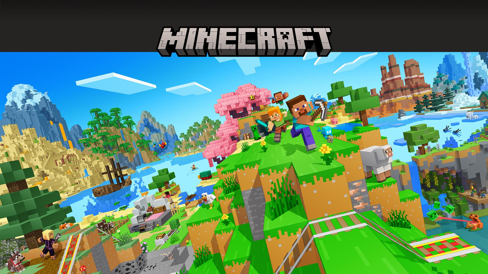
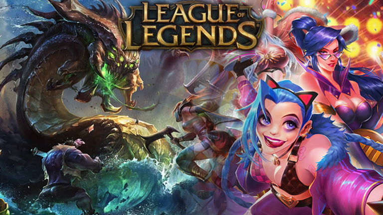

Minecraft es un videojuego de construcción de tipo «mundo abierto»

League of Legends es un videojuego multijugador de arena de batalla en línea desarrollado y publicado por Riot Games

Fortnite es un videojuego del año 2017 desarrollado por la empresa Epic Games lanzado como diferentes paquetes de software

Red Dead Redemption 2 es un videojuego de acción-aventura de mundo abierto desarrollado y publicado por Rockstar Games.
Pac Man es un videojuego arcade creado por el diseñador de videojuegos.
Cyberpunk 2077 es un videojuego de rol de acción de disparos en primera persona.
Alan Wake 2 es un videojuego de horror de supervivencia